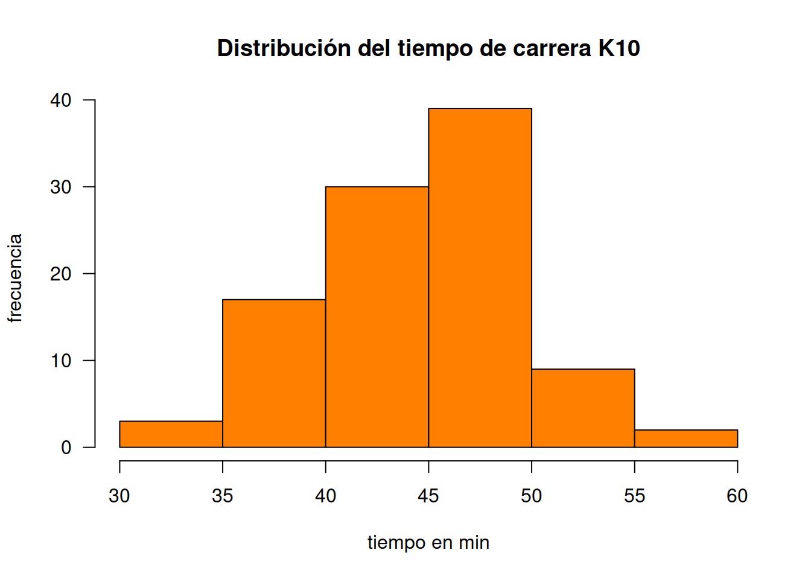
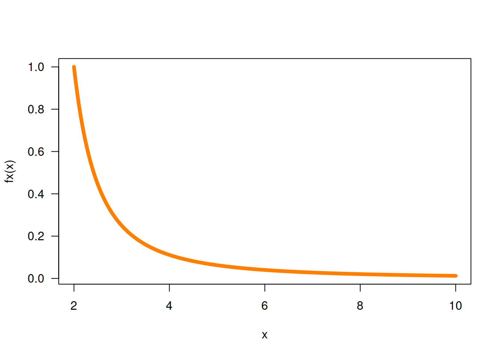
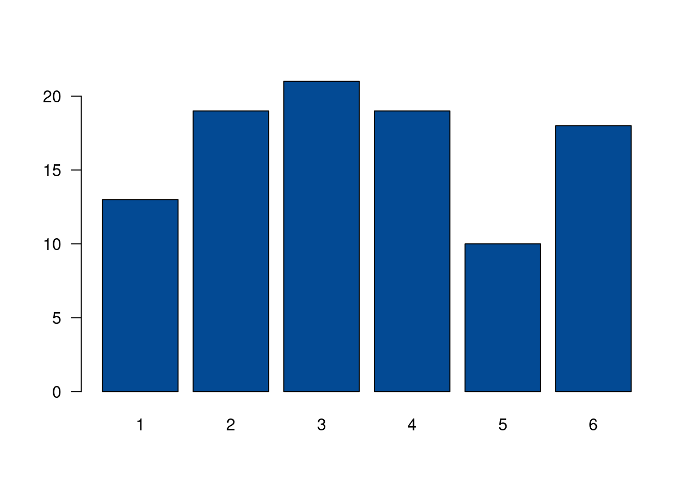
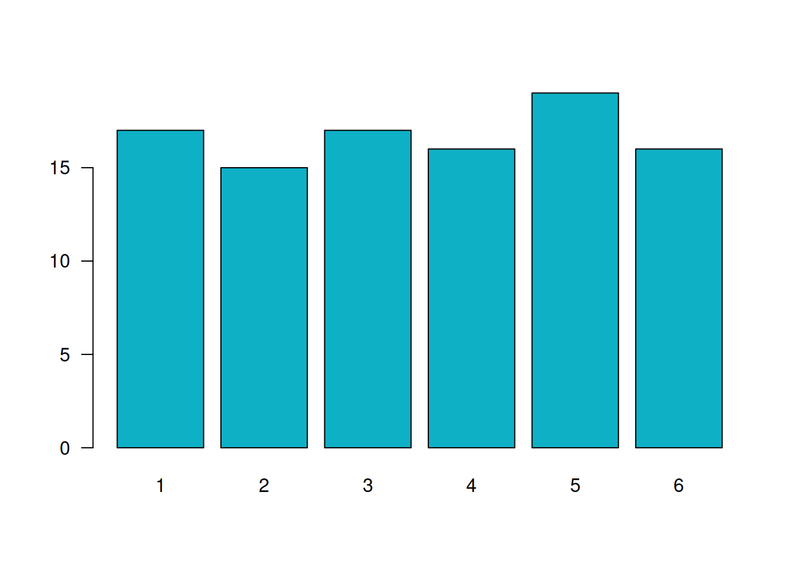

Introducción a R
Nivelatorio de Estadística

Que es R
Es un lenguaje para la computación estadística, utilizado para el procesamiento de información y generación de modelos estadísticos.
Entre las principales caractarísticas estan:
Licencia (GNU GPL) abierta y gratis
Creciente popularidad en ciencia de datos
Multipalataforma (Linux, Windows, MacOS)
Creado por los estadósticos Ross Ihaka y Robert Gentieman (U.Auckland - Nueva Zelanda) 1993 como lenguaje para el anaisis de datos y gráficos
Lenguaje multiparadigma
Codigo construido en C y Fortran
Gran comunidad muy activa
Gran cantidad de librerias o packages (más de 18000) en su gran mayoria estan almacenadas en CRAN, Biocondictor, y otras almacenadeas en github durante su proceso de construcción y ajustes

¿Qué es RStudio?

Esta interfaz o IDE que integra un conjunto de herramientas y ventanas que facilitan el trabajo con R a sus usuarios
Esta conformada por varias ventana como se muestra en la siguiente imagen:

- Fuente (Source) : Ventana donde se trabajan los script con código que se guardan para posterior utilización
- Consola (Console) : Ventana donde se pueden escribir comandos de manera directa
- Ambiente (Environment) : Ventana donde se pueden observar las varables y objetos creados
- Archivos (Files) : Ventana que muestra el directorio y los archivos en el que estamos trabajando
- Graficos (plots) : Ventana que presenta los gráficos construidos
- Paquetes (Packages) : Ventana que permite instalar los paquetes requeridos
- Ayudas (Help) : Ventana en la que podemos pedir ayuda sobre las sintaxis de funciones
En los siguientes enlaces se pueden descargar los programas para su instalación :
Nota: Antes de instalar RStudio se recomienda instalar los siguientes programas
- git
- Miktex o Texlife dependiendo el sistema operativo
- un visor de pdf en caso de no tenerlos
- Python
Estos programas se insertan dentro de la configuración inicial al instalar posteriormente RStudio y serán de gran utilidad al procesar informes mediantes archivos Rmd
R cuenta con una ventana de ayudas que permite revisar las sintaxis y detalles de sus parámetros, al igual que ejemplos y artículos relacionados con las funciones consultadas
Para asceder a las ayudas se puede consultar directamente en la venta Help (#7 de la imagen) o desde la linea de la Consola:
help("lm")
?"lm"
A manera de instroducción a continuación se relacionan algunas ayudas para la iniciación del lenguaje :
Tipos de objetos en R
| Objeto | tipos | se permite varios tipos en mismo objeto ? |
|---|---|---|
| vector | numéricos, caracter, complejo, lógico | No |
| factor | numérico, caracter | No |
| arreglo | numéricos, caracter, complejo, lógico | No |
| matriz | numéricos, caracter, complejo, lógico | No |
| data.frame | numéricos, caracter, complejo, lógico | Si |
| ts | numéricos, caracter, complejo, lógico | Si |
| lista | numéricos, caracter, complejo, lógico, función, expresión | Si |
Tomado de: R para principiantes
A continuación se presentan algunos ejemplos de objetos
vector
Arreglo unidimensional de valores, caracteres o cadenas
x=c(1,2,3,4,5)
y=c("Muy regular", "Regular", "Bueno", "Muy bueno", "Excelente")
matriz
Arreglo bidimensional de valores
x=1:9 # vector de 9 valores m=matrix(x,nrow=3) # matriz con 3 filas y 3 columnaS
arrays
Arreglos multimensionales de valores. En el siguiente ejemplo se representa un arreglo de 3 matrices 3x3 que conformarian en 3D un cubo de datos
x=1:9 y=10:18 z=19:27 mn=array(c(x,y),dim=c(3,3,3)) # <<-
factores
Vector de variables categóricas, por lo general se utilizan para dividir una base en subgrupos
x=c("rojo", "verde", "azul")
y=rep(x, times=4)
y=as.factor(y) # <<-
listas
Colección de objetos cada uno de tipos diferentes. El objeto de esta clase guarda valores en diferentes formatos.
En el siguiente ejemplo se construye un objeto h que contiene varios elementos dentro de si, todos relacionados con un histograma
h=hist(rnorm(100,25,10))

data.frames
Estructura de datos de dos dimensiones - filas y columnas - base de
datos. con la función data() se pueden cargar bases de
datos contenidas en R. data(iris) carga la base iris que
contiene 150 registros (colomnas) y 5 variables (filas).
data(iris)
funciones
Para construir una función utilizamos la palabra
function, entre parentesis los valores de entrada y entre
corchetes la formula que conforma la función. Por ejemplo:
\[f(x)=\dfrac{1}{(x-1)^{2}}\]
fx=function(x){1/(x-1)^2} # <<-
fx(100) # función evaluada en x=100
[1] 0.0001020304
En este caso la función es evaluada dentro de un otra función en la construcción de un gráfico
x=seq(from=2,to=10, by=0.01) # genera secuencia de numeros entre 2 y 10 con paso 0.01 plot(x, fx(x), type="l", col="#FF7F00", lwd = 5, las=1) # genera grafica

El siguiente ejemplo construye una función para la realización de un gráfico. En este caso los valores de entrada estan conformados por un vector de datos y un color
# funcion definida para la construccion de graficos
grafica=function(x,color){
barplot(x,
col=color, las=1)
}
y=sample(1:6,100, replace = T) # generacion de datos - simula lanzamiento de dado
z=table(y) # generacion de tabla de datos
grafica(z,"#034A94") # evalua la función en los datos z y color #034A94

w=round(prop.table(z)*100,2) # genera datos y constuye tabla en porcentaje grafica(w,"#0EB0C6") # evalua la funcion con w y color azul

ts
Los objetos ts corresponde a series temporales que estan
cupuestos por un inicio, un final y una periodicidad temporal
regular
x=rnorm(365, 20,3) temperatura=ts(x,freq=12,start=c(1981,1)) # <<-
Operadores en R
| Aritméticos | Comparativos | Lógicos | |||
|---|---|---|---|---|---|
| + | adición | < | menor que | !x | NO lógico |
| - | substracción | > | mayor que | x & y | Y lógico |
| * | multiplicación | <= | menor o igual que | x | y |
| / | división | >= | mayor o igual que | x or y | O exclusivo |
| ^ | potencia | == | igual | ||
| %% | módulo | != | diferente de | ||
| %/% | división enteros |
Tomado de : R para principiantes